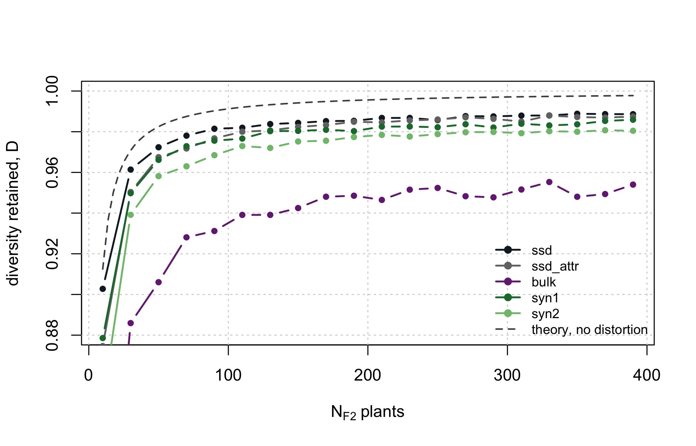
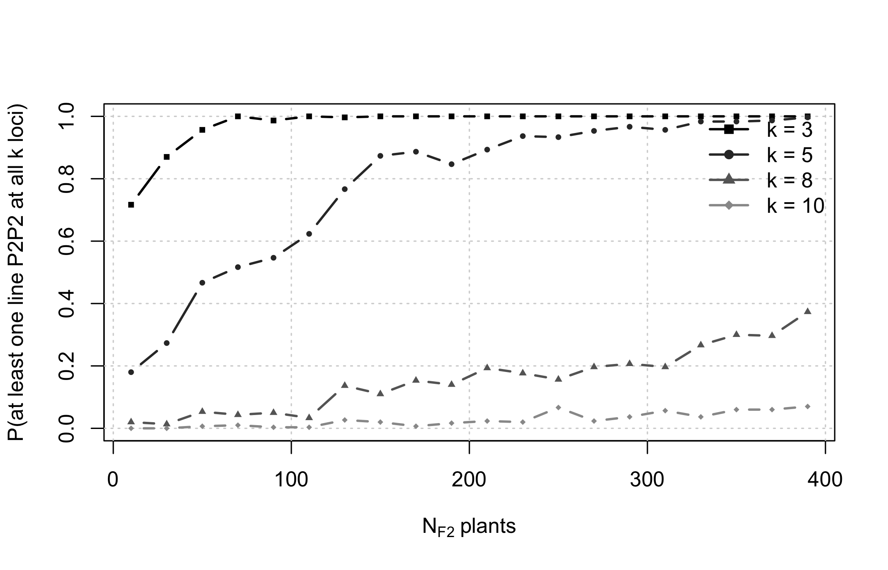

The previous chapters took the candidate pool as given. This one asks where it comes from: a wide cross between two divergent parents, carried F1 -> F2 -> F3 -> F4, and the question every programme has to answer before it plants anything – how many plants?
The answer turns out to depend entirely on what you are sizing for. There is no single optimal \(N\), and the most common failure is to size for the objective that saturates earliest and then be surprised when a different objective was never met.
5.1 The simulated space is ancestry, not alleles
Each genome position is coded 0 (from parent P1) or 1 (from parent P2). For a wide biparental cross between two divergent heterotic groups this is the correct abstraction: essentially every locus polymorphic between the parents is biallelic, so ancestry is a sufficient statistic. Throughout this chapter, “allele frequency” means “frequency of P1 ancestry”.
5.2 The assumptions, one at a time
These are the assumptions the numbers rest on. Read them before trusting any of the numbers.
P2. Parents fully homozygous and fixed for alternative alleles. Consequently every F1 plant is genetically identical and the genetic \(N_e\) of the F1 is 1. Sizing the F1 is a logistical decision, not a genetic one – unless the parents carry residual heterozygosity, which Section 5.5 handles.
P3. The genetic map. Ten chromosomes whose lengths (maize_chr_len) total 1670 cM, i.e. \(L\) = 16.7 Morgans. The lengths are a model input chosen to approximate a composite maize map built without intermating; they are not taken from a single published map. Do not use map lengths estimated in intermated recombinant inbred lines (RILs) such as the intermated B73 x Mo17 (IBM) population: five generations of intermating B73 x Mo17 produced “nearly a four-fold increase in the genetic map distance” (Lee et al. 2002, abstract). The junction recursion of P7 predicts expansion of that order (Winkler et al. 2003): \(g\) random-mating generations after the F2, followed by selfing to fixation, give \((2 + g/2)L\) junctions per haplotype, i.e. \(4L\) at \(g = 4\) and \(4.5L\) at \(g = 5\). Which of the two matches the IBM count depends on whether the generation that produced the F2 is counted as an intermating; this chapter does not settle it. A map expanded in this way overstates the recombination the sized population actually undergoes.
P4. Haldane recombination, no interference, identical in male and female. The probability of a haplotype switch between adjacent markers \(d\) cM apart is \(r = 0.5(1 - e^{-2d/100})\)(Haldane 1919); the first marker of each chromosome gets \(r = 0.5\), which produces independent segregation between chromosomes automatically.
Limitation: without interference the variance in crossover number is inflated (Poisson). Maize crossovers show positive interference: Falque et al. (2009) estimate that about 15% of crossovers (6% to 23% depending on the chromosome) come from a non-interfering pathway and the rest from an interfering one. The simulated block-length distribution therefore has a longer tail than under interference; the size of that difference was not measured here. Mean block lengths and allele frequencies are unaffected, because the map length fixes the mean number of crossovers.
P5. Segregation distortion by rejection sampling, therefore exact rather than approximate. Two mechanisms: gametophytic (of the Ga1 type, a unilateral cross-incompatibility system whose Ga1 gene acts through male function (Zhang et al. 2018)) acting only on the male gamete, and zygotic (hybrid lethality or subvitality) as genotype fitnesses. Because rejection acts on the whole gamete, the region linked to the distorter is dragged along – which is exactly the phenomenon of interest. Distortion is common in maize mapping populations: 17% of 1,820 markers across four populations, and 36% in B73/Mo17, with three known gametophytic factors as possible causes (Lu et al. 2002). The three distorters below, their positions and their strengths are model inputs. All three act against P2 ancestry (P1 transmission above 0.5 at the two gametic loci, a reduced P2P2 fitness at the zygotic one). The bin numbers in label are placeholders, not mapped positions of the named loci.
Show code
f2_distorters
chr
pos_cM
type
k
w00
w01
w11
label
4
75
gametic
0.80
NA
NA
NA
distorter chr4 (illustrative)
1
160
zygotic
NA
1
1
0.45
partial lethal (1.10)
5
60
gametic
0.68
NA
NA
NA
weak gametic (5.03)
Show code
g <- f2_distorters$type =="gametic"stopifnot(all(f2_distorters$k[g] >0.5),all(f2_distorters$w11[!g] < f2_distorters$w00[!g]))
WarningThe distorters are plausible, not measured
In the grid of Section 5.4 this is the input whose effect on diversity more plants barely reduce inside the range tested (the distortion gap of Figure 5.1). Replace f2_distorters with your own F2 genotyping data before using any number here to decide field area.
P6. Five schemes, all ending with \(H = 0.125\) so they are directly comparable: ssd (single-seed descent, SSD: one seed per plant per generation – the neutral reference, no selection, no drift beyond the meiotic), ssd_attr (SSD with a random loss of 15% of plants per generation, standing for vigour, partial sterility or flowering asynchrony; the rate is a scenario parameter, f2_opt$attrition, not an empirical estimate), bulk (differential seed contribution, a Wright-Fisher model with weights \(w_i = e^{\beta(z_i - \bar z)}\) where \(z_i\) is the share of plant \(i\)’s genome from P1, which the model takes as the adapted parent, and \(\beta\) = 6 (f2_opt$beta_bulk) is a model input not estimated from data – a phenomenological model of polygenic natural selection, not a model of adaptation loci; because \(w_i\) increases with \(z_i\), the bulk selects against P2 ancestry by construction), and syn1/syn2 (Syn1, Syn2: one or two random intercrossing cycles in the F2 before the two selfings).
P7. The F4 panel is not a RIL panel. Residual heterozygosity is \(H = 0.125\), and that changes every theoretical expectation (Table 5.1). The last row of the table counts junctions in the sense of Fisher (1954): \(A_t\) junctions per haplotype in generation \(t\), \(L\) the map length in Morgans, \(H_t\) the heterozygosity of the parent whose meiosis produces generation \(t + 1\).
Table 5.1: Theoretical identities for an F4 panel (\(H\) = 0.125), \(N\) lines per panel, no distortion. Column \(c\): the F4 coefficient; column Value in F4: the quantity written with that \(c\). The commonly quoted \(0.5/\sqrt{N}\) for SE(\(\hat p\)) holds only at F\(_\infty\) (\(H\) = 0). Junction coefficient from expected_junctions() on the 2 cM map of P3, in units of \(L\) (Morgans).
Quantity
Formula
c
Value in F4
Var(dosage per line)
(1 - H) / 4
0.21875
c
SE(p_hat)
0.5 sqrt((1 - H) / N)
0.46771
c / sqrt(N)
Diversity retained D
1 - (1 - H) / N
0.87500
1 - c / N
P(P2 homozygote per locus)
(1 - H) / 2
0.43750
c
Junctions per haplotype
A_2 = L; A_(t+1) = A_t + L H_t
1.75000
c L
The diversity row of Table 5.1 is the identity used throughout the chapter. Let \(p_j \in [0, 1]\) be the frequency of P1 ancestry at marker \(j = 1, \dots, m\) in a panel of \(N\) F4 lines, one per F2 plant, and \(D = m^{-1} \sum_j 2 p_j (1 - p_j) / 0.5 \in [0, 1]\) the diversity retained (diversity_retained()), with the frequency base the panel itself. Without distortion and without selection (ssd), \[
\mathrm{E}[D] = 1 - \frac{1 - H}{N},
\tag{5.1}\] with \(H\) = 0.125 the F4 heterozygosity of P7 and the expectation taken over replicate populations. Section 5.3 checks it by simulation.
P8. The standard error is estimated between replicates, not between markers. This is essential: linked markers are strongly autocorrelated, so the spread across markers within one replicate is not an estimator of sampling error.
P9. What is not modelled, and therefore cannot be answered here: deliberate artificial selection, quantitative trait locus (QTL) architecture, phenotypic inbreeding depression, mutation (irrelevant on this timescale), and structural variation. If you know there is a large inversion between your parents, zero the recombination rate over that interval in build_map().
Known bias: a junction is counted only as a change of ancestry between adjacent markers, so two junctions inside the same marker interval cancel and the simulated count is biased downward. Its size at the grid’s spacing and at 1 cM is measured in Section 5.3.
5.3 Verifying the identities live
The theory of Section 5.2 is not decoration – it is checkable, and the simulator is only trustworthy if it reproduces it. The heterozygosity and diversity checks (Table 5.2, Table 5.3) run on a 10 cM map with distortion switched off, so the neutral expectations apply exactly. The junction checks do not share that setup: Table 5.5 uses the cached grid (2 cM map, distortion active), and Table 5.6 uses live neutral panels on 2 cM and 1 cM maps; each caption states its setup.
Show code
map10 <-build_map(maize_chr_len, spacing_cM =10)neutral <-make_distortion(map10, NULL, active =FALSE)set.seed(4) # one draw: a single F1 -> F4 lineage of 400 plantsF1 <-make_F1(map10, 400)F2 <-cross_indices(F1, 1:400, 1:400, map10, neutral)F3 <-cross_indices(F2, 1:400, 1:400, map10, neutral)F4 <-cross_indices(F3, 1:400, 1:400, map10, neutral)het_chk <-do.call(rbind, lapply(list(F1, F2, F3, F4), function(P) { h <-colMeans(P$H1 != P$H2) # per-plant heterozygosityc(H_observed =mean(h), se = stats::sd(h) /sqrt(length(h)))}))het_chk <-data.frame(generation =c("F1", "F2", "F3", "F4"), het_chk,H_expected =c(1, 0.5, 0.25, 0.125))# tolerance: 4 standard errors between plants (the F1 has none)stopifnot(all(abs(het_chk$H_observed - het_chk$H_expected) <=pmax(4* het_chk$se, 1e-12)))knitr::kable(fmt(het_chk, 4))
Table 5.2: Mean per-plant heterozygosity, F1 to F4, in one live lineage of 400 plants (10 cM map, distortion off, seed 4); se is the standard error between plants; H_expected is \((1/2)^{t-1}\) for generation F\(_t\).
generation
H_observed
se
H_expected
F1
1.0000
0.0000
1.000
F2
0.4968
0.0038
0.500
F3
0.2541
0.0031
0.250
F4
0.1268
0.0022
0.125
Heterozygosity halves (Table 5.2) at every selfing, within four between-plant standard errors. The diversity identity is an expectation over replicate populations, so Table 5.3 checks Equation 5.1 on the replicate mean, again against four standard errors:
Table 5.4: Expected junctions per haplotype and the corresponding mean block length after SSD, Syn1 and Syn2, from the recursion of Table 5.1 (expected_junctions(), 2 cM map of P3, no distortion).
junctions
mean_block_cM
SSD
29.22
42.57
Syn1
37.57
35.10
Syn2
45.92
29.86
Each Syn cycle adds only 0.5\(L\) junctions, not \(1.0L\). The extra meiosis creates a junction only where the parent is heterozygous, and \(H = 0.5\) at the F2/Syn stage. Budgeting an intercrossing cycle as “one more map length of recombination” overstates what it buys by a factor of two.
The prediction is checked against the simulated junction counts of the cached grid (2 cM markers, distortion active; mean of junctions_per_hap() over 20 lines per replicate, pooled over the replicates of all 20 values of \(N\); Table 5.5):
Show code
jd <-do.call(rbind, lapply(unique(f2$scheme), function(s) { d <- f2[f2$scheme == s, ] e <-expected_junctions(if (s %in%c("syn1", "syn2")) s else"ssd", map)[["junctions"]] o <- stats::weighted.mean(d$junc, d$n_rep)data.frame(scheme = s, replicates =sum(d$n_rep), expected = e,simulated = o, deficit_pct =100* (o / e -1))}))stopifnot(all(jd$deficit_pct <0),all(diff(jd$deficit_pct[match(c("ssd", "syn1", "syn2"), jd$scheme)]) <0))knitr::kable(fmt(jd, 2))
Table 5.5: Junctions per haplotype, recursion against the cached grid (regenerate.R f2size, 2 cM map, distortion active). replicates: populations pooled over all grid \(N\); expected: expected_junctions() (SSD recursion for ssd, ssd_attr and bulk); simulated: replicate-weighted mean of junctions_per_hap(); deficit_pct: 100 (simulated / expected - 1), in %.
scheme
replicates
expected
simulated
deficit_pct
ssd
340
29.22
28.12
-3.78
ssd_attr
340
29.22
28.25
-3.35
bulk
340
29.22
27.58
-5.61
syn1
340
37.57
35.64
-5.14
syn2
340
45.92
43.00
-6.36
Every scheme counts fewer junctions than predicted: -3.8% for SSD, -5.1% and -6.4% for one and two intercrossing cycles. This is the known bias of P9, and it is larger than the single-meiosis Haldane deficit at 2 cM, \(r/d - 1\) = -2%. The inference is that the deficit grows with the number of junctions accumulated before the count, because junctions laid down by different meioses inside one interval also cancel; the cached grid supports it only through the ordering SSD, Syn1, Syn2, not through a separate test. The bulk departs further than SSD, and the recursion does not model selection on ancestry, so its row is not a test of the recursion.
A finer map reduces the deficit but does not remove it at 1 cM. The chunk below measures it on neutral SSD panels of 500 lines, all lines counted (Table 5.6):
Show code
spacing_chk <-do.call(rbind, lapply(c(2, 1), function(sp) { m <-build_map(maize_chr_len, spacing_cM = sp) nn <-make_distortion(m, NULL, active =FALSE)set.seed(11) pop <-run_scheme("ssd", 500, m, nn, f2_opt) per_line <-vapply(seq_len(ncol(pop$H1)), function(i)junctions_per_hap(list(H1 = pop$H1[, i, drop =FALSE],H2 = pop$H2[, i, drop =FALSE]), m), numeric(1)) e <-expected_junctions("ssd", m)[["junctions"]]data.frame(spacing_cM = sp, deficit_pct =100* (mean(per_line) / e -1),se_pct =100* stats::sd(per_line) /sqrt(length(per_line)) / e)}))knitr::kable(fmt(spacing_chk, 2))
Table 5.6: Junction-count deficit against expected_junctions() at 2 cM and 1 cM marker spacing, one live neutral SSD panel of 500 lines per spacing (seed 11). deficit_pct and se_pct in %; se_pct is the standard error between lines, scaled by the expected count.
spacing_cM
deficit_pct
se_pct
2
-5.15
0.76
1
-2.28
0.75
At 1 cM the deficit is -2.3% (standard error 0.7%, between lines, one panel), against -5.1% at 2 cM on the same design. A count unbiased to within that standard error needs a spacing finer than 1 cM; which spacing achieves it was not measured.
The two 2 cM estimates of the SSD deficit do not coincide: the live panel gives -5.1% and the grid row of Table 5.5 -3.8%, a difference of -1.8 panel standard errors. The grid pools 340 replicates of 20 lines, but with distortion active; the panel is neutral but a single draw of 500 lines. These data do not separate panel sampling error from an effect of distortion on the count. The inference is that the 2 cM against 1 cM contrast from two single panels, 2.9 percentage points (s.e. 1.1), is imprecise; neither panel was replicated, and the effect of distortion on the grid count was not measured separately.
5.4 The results
The full grid – five schemes, 20 population sizes, adaptive replication – takes several minutes and is shipped precomputed. Table 5.7 gives its SSD rows at ten of those sizes.
Table 5.7: SSD, the reference scheme without selection, at ten of the twenty grid sizes \(N\) (F2 plants); cached grid (regenerate.R f2size, 2 cM map, distortion active, seed 20260828). Column replicates: independent F1-to-F4 populations per \(N\) (40 at \(N \leq\) 50, falling to 10 from \(N\) = 210). Every other column is a mean over those replicates; s.d.(\(D\)) is between replicates; skewed genome is the percentage of markers with \(\lvert p - 0.5 \rvert > 0.15\) (skew_fraction()); \(p\) is the P1 ancestry frequency.
N
replicates
D
s.d.(D)
SE(p_hat)
skewed genome (%)
min(p, 1-p)
N equivalent
10
40
0.903
0.0171
0.148
42.8
0.069
9
30
40
0.961
0.0080
0.084
14.4
0.187
23
50
40
0.972
0.0052
0.066
7.9
0.209
32
70
29
0.978
0.0036
0.056
5.6
0.221
40
90
22
0.981
0.0034
0.047
4.3
0.233
47
110
18
0.982
0.0030
0.044
4.2
0.232
48
150
13
0.984
0.0032
0.039
3.8
0.236
56
190
11
0.985
0.0019
0.032
3.7
0.227
60
290
10
0.988
0.0019
0.027
3.3
0.240
70
390
10
0.989
0.0017
0.023
3.1
0.242
77
5.4.1 Diversity stays below the distortion-free curve at every N tested
Figure 5.1 plots \(D\) for the five schemes against the distortion-free expectation.
Show code
schemes <-unique(f2$scheme)# scheme colours: neutral, distinct from the pool A/B colours of book_palcols <-c(ssd = book_pal[["ink"]], ssd_attr = book_pal[["mid"]],bulk ="#762a83", syn1 ="#1b7837", syn2 ="#7fbf7b")plot(NA, xlim =range(f2$N), ylim =c(0.88, 1.0),xlab =expression(N[F2]~"plants"), ylab ="diversity retained, D")grid()for (s in schemes) { d <- f2[f2$scheme == s, ]lines(d$N, d$div, type ="b", pch =19, cex =0.6, col = cols[s], lwd =1.8)}curve(1-0.875/ x, add =TRUE, lty =2, col ="grey30", lwd =1.5)legend("bottomright", c(schemes, "theory, no distortion"),col =c(cols[schemes], "grey30"), lwd =c(rep(1.8, length(schemes)), 1.5),lty =c(rep(1, length(schemes)), 2), pch =c(rep(19, length(schemes)), NA),bty ="n", cex =0.8)

Figure 5.1: Diversity retained \(D\) (dimensionless, 1 = no loss) in the F4 panel against the number of F2 plants \(N\), for the five schemes of P6 (bulk at \(\beta\) = 6, attrition 15%). Each point is the mean over 10 to 40 replicate populations (more at small \(N\); counts per \(N\) for SSD in Table 5.7); no error bars are drawn. Cached grid (regenerate.R f2size, 2 cM map, distortion active, seed 20260828). Dashed: the distortion-free expectation Equation 5.1, \(H\) = 0.125.
At the largest \(N\) tested (390), SSD retains \(D\) = 0.9886 (s.d. 0.0017 over 10 replicates), and the curve is still rising: \(D\) gains 0.0067 from \(N\) = 110 to \(N\) = 390. Across the 20 grid points the gap between the distortion-free expectation and the SSD mean lies between 0.0087 and 0.0108, with a least-squares slope of -0.00017 per 100 plants (unweighted). Weighted by the inverse sampling variance of each replicate mean (\(n_{rep}/s^2\), with \(s\) the between-replicate s.d. of \(D\)), the slope is -0.00025 per 100 plants, s.e. 0.00013 (from those variances), so -2 standard errors from zero. Over the whole grid that slope amounts to -0.001 against a mean gap of 0.0095. No limit of \(D\) as \(N \to \infty\) was computed; the grid stops at 390.
The interpretation is that the gap is segregation distortion, the only departure from the neutral model in SSD, and that it is a bias which more plants barely reduce inside the range tested: the weighted slope is at the margin of detection and, taken at face value, removes a small fraction of the gap across the whole grid. Adding plants buys drift protection, and little distortion protection. How the gap behaves beyond \(N\) = 390 was not measured.
Figure 5.2 shows the same separation along the genome, on two live panels (4 cM map, distortion active, one population each).
Figure 5.2: Frequency of P1 ancestry at each marker, ordered along chromosomes 1 to 10 (grey verticals: chromosome boundaries), in one SSD F4 panel from \(N\) = 20 F2 plants and one from \(N\) = 300; a single population each, simulated live (4 cM map, distortion active, seeds 6 and 7), so no error band. Dashed: 0.5, the neutral expectation. At \(N\) = 20 the whole curve is noisy: that is drift, and more plants reduce it. At \(N\) = 300 the departures from 0.5 that remain sit at the three distorters (dotted red lines): the deterministic bias.
5.4.2 Under selection for P1 ancestry, the bulk retains the least diversity
Table 5.8 sets the bulk at the largest \(N\) against SSD at 30 plants.
Table 5.8: Diversity retained \(D\), mean over replicate populations of the cached grid (regenerate.R f2size, 2 cM map, distortion active): the bulk (\(\beta\) = 6) at the largest grid \(N\) against SSD at \(N\) = 30 F2 plants.
comparison
N
D
bulk, largest N
390
0.954
SSD, N = 30
30
0.961
The bulk has the lowest mean \(D\) of the five schemes at 20 of the 20 grid values of \(N\), and at the largest \(N\) it retains less diversity than SSD at 30 plants. Both results follow from a model input: bulk_weights() raises the seed contribution of plants with more P1 ancestry, with \(\beta\) = 6, so the loss of P2 ancestry is built into the scheme, and its size depends on \(\beta\), which was not varied here. The comparison with SSD at \(N\) = 30 holds at this \(\beta\) only. If P2 is the donor whose germplasm the cross was made to introduce, and natural selection in the bulk favours P1 ancestry as this model assumes, the bulk is not a cheaper SSD – it is a different experiment.
5.4.3 Block length does not depend on N in the grid
Table 5.9 summarises block length and the junction-on-\(N\) slope per scheme.
Show code
nchr <-length(map$chr_len)blk <-do.call(rbind, lapply(unique(f2$scheme), function(s) { d <- f2[f2$scheme == s, ] b <- map$total_cM / (d$junc + nchr) # mean block length, cM fit <-summary(stats::lm(d$junc ~ d$N))$coefficientsdata.frame(scheme = s, block_min_cM =min(b), block_max_cM =max(b),junc_slope_per_100 =100* fit[2, 1],slope_se_per_100 =100* fit[2, 2])}))knitr::kable(fmt(blk, 2))
Table 5.9: Mean block length (cM) and the least-squares slope of junctions per haplotype on \(N\), per scheme, from the cached grid’s junction counts (regenerate.R f2size, 2 cM map, distortion active, one replicate mean per grid \(N\), \(N\) = 10 to 390). block_min_cM, block_max_cM: range over \(N\) of total map length / (junctions + chromosomes); junc_slope_per_100 and slope_se_per_100: slope and its standard error, junctions per 100 plants.
scheme
block_min_cM
block_max_cM
junc_slope_per_100
slope_se_per_100
ssd
43.23
44.44
0.00
0.07
ssd_attr
43.07
44.26
-0.01
0.06
bulk
43.26
45.12
0.08
0.07
syn1
36.09
36.98
0.05
0.06
syn2
30.99
31.90
0.15
0.08
Mean block length is computed from the cached junction counts as total map length over (junctions + chromosomes), the definition of expected_junctions(). Under SSD it ranges from 43.2 to 44.4 cM across \(N\) = 10 to 390, and the slope of junctions on \(N\) is -0.002 junctions per 100 plants (s.e. 0.069). One and two intercrossing cycles shorten the blocks to about 36.5 and 31.4 cM. The counts carry the junction deficit measured in Section 5.3, so the absolute lengths are too long by about the size of that deficit; the comparison across \(N\) and across schemes is what the table supports.
Within this grid, block length is set by the number of meioses, not by \(N\). Against linkage drag the instrument is therefore an intercrossing cycle, not field area – which is what the Syn rows of Table 5.4 quantify.
5.4.4 The metrics saturate at different N
This is the central practical result, and the reason the question “what is the optimal \(N\)?” has no single answer (Table 5.10). To make “saturates” checkable it is defined on the grid: for \(D\) and for the worst region \(\min(p, 1-p)\), \(N_{90}\) is the smallest grid \(N\) whose replicate mean has reached 90% of the gain from the smallest to the largest \(N\) tested. The definition is relative to the grid’s upper end (390), so a longer grid would move it. The replicate means carry sampling error, and so does the threshold, which is built from the two end means; the table therefore also gives a two-standard-error bracket: the last grid \(N\) whose mean lies more than two standard errors below the threshold, and the first that lies more than two above it. For recovery of a P2 homozygote at \(k\) unlinked loci the target is absolute, \(P \geq 0.95\). Its distortion-free closed form, the classical number of plants needed to recover a genotype (Sedcole 1977), is
with \((1 - H)/2\) the probability that an F4 line is P2P2 at one locus (P7) and the \(k\) loci on different chromosomes.
Show code
n90 <-function(N, y) { thr <- y[1] +0.9* (y[length(y)] - y[1]) N[which(y >= thr)[1]]}# 2-s.e. bracket of the crossing; se = between-replicate sd / sqrt(n_rep)n90_bracket <-function(N, y, se) { n <-length(y) thr <- y[1] +0.9* (y[n] - y[1]) z <- (y - thr) /sqrt(se^2+0.01* se[1]^2+0.81* se[n]^2) lo <- N[max(which(z <-2& N <n90(N, y)))] hi <- N[min(which(z >2& N >=n90(N, y)))]c(lo = lo, hi = hi)}br_D <-n90_bracket(ssd$N, ssd$div, ssd$div_sd /sqrt(ssd$n_rep))br_pmin <-n90_bracket(ssd$N, ssd$pmin, ssd$pmin_sd /sqrt(ssd$n_rep))pmin_prev <- ssd$N[which(ssd$N ==n90(ssd$N, ssd$pmin)) -1] # grid N before the crossingNgrid <-sort(unique(ml$N))n95_grid_k3 <-min(Ngrid[1- (1- (0.875/2)^3)^Ngrid >=0.95])n95_closed <-function(k, H =0.125) log(0.05) /log(1- ((1- H) /2)^k)kk <-sort(unique(ml$k))ml_first95 <-vapply(kk, function(k) { d <- ml[ml$k == k, ]; d <- d[order(d$N), ]if (any(d$P >=0.95)) d$N[which(d$P >=0.95)[1]] elseNA_real_}, numeric(1))ml_Pmax <-vapply(kk, function(k) ml$P[ml$k == k & ml$N ==max(ml$N)], numeric(1))# closed form against a neutral simulation, k = 5, N = 110 (10 cM map)set.seed(8)P_pops <-replicate(20, multilocus_recovery(run_scheme("ssd", 110, map10, neutral, f2_opt), map10, 5))P_neutral <-mean(P_pops)P_se <- stats::sd(P_pops) /sqrt(length(P_pops))P_closed <-1- (1- (0.875/2)^5)^110stopifnot(abs(P_neutral - P_closed) <4* P_se) # 4 s.e. between populationsml_below <- ml$P <1- (1- (0.875/2)^ml$k)^ml$Nsat <-data.frame(Objective =c("Diversity retained (D)","Worst region of the genome, min(p, 1-p)","Precision of the panel's p_hat",paste0("Recovery of ", kk, " loci")),Criterion =c("N90", "N90", "none: SE falls as N^(-1/2)",rep("P >= 0.95", length(kk))),`Grid N reaching it`=c(n90(ssd$N, ssd$div), n90(ssd$N, ssd$pmin), "--",ifelse(is.na(ml_first95), "not reached", ml_first95)),`2-s.e. bracket`=c(paste(br_D, collapse =" to "),paste(br_pmin, collapse =" to "), "--",rep("--", length(kk))),`Value at largest N`=c(fmt(ssd$div[ssd$N == Nmax], 4),fmt(ssd$pmin[ssd$N == Nmax], 3),fmt(ssd$se_p[ssd$N == Nmax], 4),fmt(ml_Pmax, 3)),`Closed form N95, no distortion`=c("--", "--", "--",round(n95_closed(kk))),check.names =FALSE)knitr::kable(sat)
Table 5.10: Different objectives, different answers. \(D\), \(\min(p, 1-p)\) and SE(\(\hat p\)): SSD replicate means of the cached grid (regenerate.R f2size, 2 cM map, distortion active, \(N\) = 10 to 390 F2 plants). \(N_{90}\): smallest grid \(N\) whose replicate mean reaches 90% of the gain from the smallest to the largest grid \(N\). 2-s.e. bracket: last grid \(N\) with (mean - threshold) below -2 s.e. and first with it above +2 s.e., s.e. combining the standard error of the mean at that \(N\) (between-replicate s.d. / \(\sqrt{n_{rep}}\)) and that of the threshold. Recovery of \(k\) loci: one simulated population per \(N\) (replicate 1 of the grid), 300 random locus sets, criterion \(P \geq\) 0.95; the closed form is Equation 5.2.
Objective
Criterion
Grid N reaching it
2-s.e. bracket
Value at largest N
Closed form N95, no distortion
Diversity retained (D)
N90
90
70 to 110
0.9886
–
Worst region of the genome, min(p, 1-p)
N90
90
30 to 350
0.2420
–
Precision of the panel’s p_hat
none: SE falls as N^(-1/2)
–
–
0.0225
–
Recovery of 3 loci
P >= 0.95
50
–
1.0000
34
Recovery of 5 loci
P >= 0.95
270
–
0.9970
185
Recovery of 8 loci
P >= 0.95
not reached
–
0.3730
2230
Recovery of 10 loci
P >= 0.95
not reached
–
0.0700
11659
The closed form Equation 5.2 was checked against a neutral simulation at \(k\) = 5, \(N\) = 110: 0.825 (s.e. 0.008 between the 20 populations) against 0.831; the chunk asserts agreement within four such standard errors. With distortion, the simulated recovery for \(k \geq 5\) lies below the closed form at 57 of 60 grid points. For \(k = 3\), at \(N\) = 10 the simulated value is 0.717 and the closed form 0.583; the simulated curve first reaches 0.95 at grid \(N\) = 50, the closed form at grid \(N\) = 50.
The inference is that distortion against P2, which all three distorters exert, lowers the per-locus probability of a P2P2 line, so the closed-form \(N_{95}\) is expected to understate what the simulated cross needs; this was not shown beyond the grid. For \(k \geq 8\) the closed form already lies far outside the grid, and no grid \(N\) reaches the target. The recovery rows rest on one population per \(N\), so their crossing points carry the between-population variance that the replicated rows average out; the curves in Figure 5.3 are visibly non-monotone for that reason.
For \(D\) the two-standard-error bracket of \(N_{90}\) runs from 70 to 110. For \(\min(p, 1-p)\) the replicate means cross the threshold between grid \(N\) = 70 and 90, but the bracket runs from 30 to 350. The inference is that the worst-region curve is flat within its replicate error over that range, so the grid does not locate its \(N_{90}\); more replicates per \(N\) would be needed to do so. The contrast between objectives in Table 5.10 rests on \(D\) and on recovery, not on \(\min(p, 1-p)\).
Show code
stopifnot(isTRUE(all.equal(kk, c(3, 5, 8, 10)))) # k values hard-coded in the caption# k colours: neutral grey ramp, distinct from the pool A/B colours of book_palcols_k <-grey(seq(0, 0.6, length.out =length(kk)))plot(NA, xlim =range(ml$N), ylim =c(0, 1), xlab =expression(N[F2]~"plants"),ylab ="P(at least one line P2P2 at all k loci)")grid()for (i inseq_along(kk)) { d <- ml[ml$k == kk[i], ]lines(d$N, d$P, type ="b", pch =14+ i, cex =0.6, col = cols_k[i], lwd =1.8)}legend("topright", paste("k =", kk), col = cols_k, lwd =1.8,pch =14+seq_along(kk), bty ="n")

Figure 5.3: Multilocus recovery: probability that at least one F4 line is homozygous for P2 at \(k\) unlinked loci (\(k\) = 3, 5, 8, 10), against the number of F2 plants \(N\); SSD, distortion active, 2 cM map. One simulated population per \(N\) (replicate 1 of the cached grid, regenerate.R f2size, seed 20260828), so there are no replicates and no error bars: each point is a proportion over 300 random locus sets drawn in that one population, and the point-to-point wiggle is between-population variance, not signal.
The marginal gain in \(D\) tells the same story from the other side. The standard error of each step combines the two replicate means (Table 5.11):
Table 5.11: Gain in mean \(D\) between consecutive grid sizes, SSD, cached grid (regenerate.R f2size, 2 cM map, distortion active). se: standard error of the difference of the two replicate means, \(\sqrt{s_1^2/n_1 + s_2^2/n_2}\) with \(s\) the between-replicate s.d. of \(D\) and \(n\) the replicate count at each size.
step
gain_in_D
se
10 -> 30
0.0586
0.0030
30 -> 50
0.0110
0.0015
50 -> 70
0.0057
0.0011
70 -> 90
0.0034
0.0010
90 -> 110
0.0005
0.0010
110 -> 130
0.0018
0.0009
130 -> 150
0.0006
0.0011
150 -> 170
0.0009
0.0011
170 -> 190
0.0002
0.0008
190 -> 210
0.0014
0.0010
210 -> 230
0.0000
0.0010
230 -> 250
-0.0011
0.0008
250 -> 270
0.0020
0.0006
270 -> 290
-0.0001
0.0007
290 -> 310
0.0004
0.0008
310 -> 330
0.0001
0.0006
330 -> 350
0.0008
0.0005
350 -> 370
-0.0002
0.0006
370 -> 390
0.0000
0.0007
Past \(N_{90}\) = 90 for \(D\), the 15 steps of 20 plants gain between -0.0011 and 0.002; 14 of them are within two standard errors of zero. The grid cannot resolve the marginal gain of a single step of 20 plants there; it resolves only the cumulative gain to \(N\) = 390.
5.5 Sizing the F1
With fully homozygous parents the F1 is genetically uniform and the decision is logistical.
Suppose instead that each parent is still heterozygous at a fraction \(h_{res}\) of the \(n_{loc}\) loci that are polymorphic between the two parents and segregate independently. Here \(1 - h_{res}\) is the proportion of those loci at which a parent is homozygous, not an inbreeding coefficient relative to a base population, and \(h_{res}\) = 0.05, \(n_{loc}\) = 5000 are scenario values, not estimates for any germplasm. Heterozygosity is assumed to arise independently in the two parents, so there are \(2 h_{res} n_{loc}\) heterozygous (parent, locus) pairs in expectation. Each F1 plant receives one random gamete from each parent, so at a heterozygous (parent, locus) pair one of the parent’s two alleles is transmitted to no F1 plant when all \(n\) plants receive the same one, with probability \(2(1/2)^n\). The expected number of parental alleles lost is therefore \(2 h_{res} n_{loc} \cdot 2(1/2)^n\), the quantity f1_sizing() returns.
That is not the number of loci lost. Under the biallelic assumption of P1, a parent heterozygous \(Aa\) at a locus where the other parent is \(aa\) loses polymorphism at that locus only if every F1 plant receives \(a\), with probability \((1/2)^n\); losing \(a\) leaves the other parent’s \(a\) in the F2. A locus heterozygous in both parents (probability \(h_{res}^2\)) becomes monomorphic only if all \(n\) F1 plants are \(AA\) or all are \(aa\), with probability \(2(1/4)^n\). The expected number of loci made monomorphic is \(n_{loc}\left[2 h_{res}(1 - h_{res})(1/2)^n + h_{res}^2 \cdot 2(1/4)^n\right]\) (Table 5.12).
Table 5.12: Expected parental alleles lost (f1_sizing(): heterozygous (parent, locus) pairs at which one allele reaches no F1 plant) and expected loci made monomorphic (biallelic loci, computed in the chunk), against the number \(n\) of selfed F1 plants, at the scenario values \(h_{res}\) = 0.05 and \(n_{loc}\) = 5000 independent loci; rows shown at selected \(n\), including both thresholds and the sizes below them.
n_F1
p_loss_per_locus
expected_loci_lost
expected_loci_monomorphic
4
0.1250
62.5000
29.7852
8
0.0078
3.9062
1.8559
9
0.0039
1.9531
0.9278
10
0.0020
0.9766
0.4639
12
0.0005
0.2441
0.1160
16
0.0000
0.0153
0.0072
20
0.0000
0.0010
0.0005
10 selfed F1 plants is the smallest number that puts the expected number of parental alleles lost below one (0.977, against 1.953 with 9 plants). 9 plants is the smallest number that puts the expected number of loci made monomorphic below one (0.928, against 1.856 with 8 plants). The first criterion is the stricter: it also counts an allele lost from one parent that the other parent still carries. Under these assumptions, independent loci and independent heterozygosity in the two parents included, that is the whole F1 sizing argument.
5.6 Working numbers
Table 5.13 collects the sizing decisions generation by generation.
Table 5.13: Working numbers for a wide cross, read off the SSD rows of the cached grid (\(N\) = 10 to 390 F2 plants, 2 cM map, distortion active) and f1_sizing() at the scenario values \(h_{res}\) = 0.05, \(n_{loc}\) = 5000. Size for the objective that binds, not for \(D\): \(N_{90}\) for \(D\) is a grid-relative reference point, not a recommended F2 size. P(recovery) values come from one simulated population per \(N\) (replicate 1 of the grid), with no replicate error.
Generation
Plants
Rationale
F1
10 selfed, minimum
Ne = 1 with homozygous parents, a logistical call. With h_res = 0.05 in both parents, 10 plants put expected parental alleles lost below 1 (9 put expected loci made monomorphic below 1)
F2
270 if the binding objective is recovery at k = 5
First grid N with P(recovery) >= 0.95 at k = 5, one population per N; the curve is not monotone
not reached at N <= 390 for recovery at k >= 8; set by the precision required for p_hat
At N = 390, one population: P(recovery) = 0.373 (k = 8), 0.07 (k = 10); SE(p_hat) = 0.0225, still falling as N^(-1/2)
N90 for D = 90: a reference point, not a size
Grid-relative (2-s.e. bracket 70 to 110). From N90 to N = 390, +300 plants buy +0.0072 of D
F3
same N (SSD, one seed per plant)
Does not create diversity, only avoids losing it
F4
lines x plants per line set by seed need
Seed multiplication. Plants of the same line are not independent replicates: their coancestry is (1 + F_F3)/2 = 0.875 with the F1 as base
WarningOn the “equivalent N”
\(N_{eq} = (1 - H)/(1 - D)\) answers “how many F4 lines without distortion would give the diversity actually observed”. It is a communication device, not a Wright effective size: it converts a deterministic bias into a drift equivalent. Use it to compare scenarios; never substitute it into an \(N_e\) formula.
5.7 Where this connects
The panel this chapter sizes is the raw material for everything else, and the claim that its diversity is a ceiling should be measured rather than asserted. The rest of the book works on one kernel – molecular coancestry \(f\) and gene diversity \(GD = 1 - \theta\) (Chapter 1). The F4 panel can be pushed straight into it (Table 5.14):
Show code
map_br <-build_map(spacing_cM =10)dist_br <-make_distortion(map_br, active =TRUE)bridge <-do.call(rbind, lapply(c(30, 120, 480), function(n) {set.seed(3+ n) pop <-run_scheme("ssd", n, map_br, dist_br, opt = f2_opt) X <-t((pop$H1 + pop$H2) /2) # lines x markers, 0/0.5/1 th <-mean(molecular_coancestry(X)) # all pairs, self includeddata.frame(n_F2 = n, D =diversity_retained(panel_freq(pop)),theta = th, GD =1- th, Ns =1/ (2* th))}))stopifnot(isTRUE(all.equal(bridge$GD, bridge$D /2)),isTRUE(all.equal(bridge$Ns, 1/ (2- bridge$D))))knitr::kable(fmt(bridge, 4))
Table 5.14: One live SSD F4 panel per \(N\) F2 plants (column n_F2; 10 cM map, distortion active, seed 3 + \(N\)): diversity retained \(D\), mean molecular coancestry \(\theta\) over all pairs of lines with self included, \(GD = 1 - \theta\) and \(N_s = 1/(2\theta)\), frequency base the panel itself.
n_F2
D
theta
GD
Ns
30
0.9648
0.5176
0.4824
0.9660
120
0.9852
0.5074
0.4926
0.9854
480
0.9877
0.5062
0.4938
0.9878
\(D\), the chapter’s own diversity-retained statistic, and \(GD\), the quantity every later chapter constrains, are the same quantity up to a factor: \(GD = D/2\) exactly, asserted in the chunk. With the 0/0.5/1 coding and \(\theta\) the mean of the molecular coancestry over all pairs of lines, self included (Caballero and Toro 2002), \(\theta\) averages \(p^2 + (1-p)^2\) over markers, so \(GD = 1 - \theta\) is the mean of \(2p(1-p)\), which is \(D/2\) because \(D\) divides the same mean by its maximum 0.5. The frequency base is the F4 panel itself. The sizing decision made here therefore sets the \(GD\) that Chapter 15, Chapter 18 and Chapter 19 spend the rest of the book budgeting, and it sets it once. An optimiser cannot select back up to variation the panel never sampled; the best it can do is spend what is left more slowly.
Note\(N_s\) is not informative inside a biparental cross
The status number on these panels is \(N_s = 1/(2\theta) = 1/(2 - D)\), between 0.966 and 0.988 in Table 5.14 whatever the sizing, and bounded above by 1 because \(D \leq 1\). That is correct rather than broken. Every line descends from two parents, so the panel has the genetic base of a single diploid individual, which is exactly what \(N_s = 1/(2\theta)\) reports. Section 14.3 warns that \(N_s\) describes a base rather than projecting drift; here the base is genuinely one cross.
Use \(D\) and \(GD\) to compare sizing scenarios within a cross, and \(N_s\) only once material from several crosses has been pooled.
Chapter 16 puts a number on how the loss is distributed across the whole pipeline, and this stage is where the cheapest insurance is available – more plants, once, at the start. Chapter 23 is where the same argument is made about the variance rather than the frequencies, and reaches a different conclusion about what is recoverable.
Reproduce this chapter
All the code of this chapter, in order and with the explanation kept as comments, is one script: 04-population-sizing.R. Download it, install hybdiv, and run it top to bottom in an empty directory; cached results are fetched on first use.
Caballero, A., and M. A. Toro. 2002. “Analysis of Genetic Diversity for the Management of Conserved Subdivided Populations.”Conservation Genetics 3 (3): 289–99. https://doi.org/10.1023/A:1019956205473.
Falque, Matthieu, Lorinda K. Anderson, Stephen M. Stack, Franck Gauthier, and Olivier C. Martin. 2009. “Two Types of Meiotic Crossovers Coexist in Maize.”The Plant Cell 21 (12): 3915–25. https://doi.org/10.1105/tpc.109.071514.
Haldane, J. B. S. 1919. “The Combination of Linkage Values, and the Calculation of Distances Between the Loci of Linked Factors.”Journal of Genetics 8: 299–309.
Lee, Michael, Natalya Sharopova, William D. Beavis, et al. 2002. “Expanding the Genetic Map of Maize with the Intermated B73\(\times\)Mo17 (IBM) Population.”Plant Molecular Biology 48 (5-6): 453–61. https://doi.org/10.1023/A:1014893521186.
Lu, H., J. Romero-Severson, and R. Bernardo. 2002. “Chromosomal Regions Associated with Segregation Distortion in Maize.”Theoretical and Applied Genetics 105 (4): 622–28. https://doi.org/10.1007/s00122-002-0970-9.
Winkler, Christopher R., Nicole M. Jensen, Mark Cooper, Dean W. Podlich, and Oscar S. Smith. 2003. “On the Determination of Recombination Rates in Intermated Recombinant Inbred Populations.”Genetics 164 (2): 741–45. https://doi.org/10.1093/genetics/164.2.741.
Zhang, Zhaogui, Baocai Zhang, Zhibin Chen, et al. 2018. “A PECTIN METHYLESTERASE Gene at the Maize Ga1 Locus Confers Male Function in Unilateral Cross-Incompatibility.”Nature Communications 9 (1): 3678. https://doi.org/10.1038/s41467-018-06139-8.